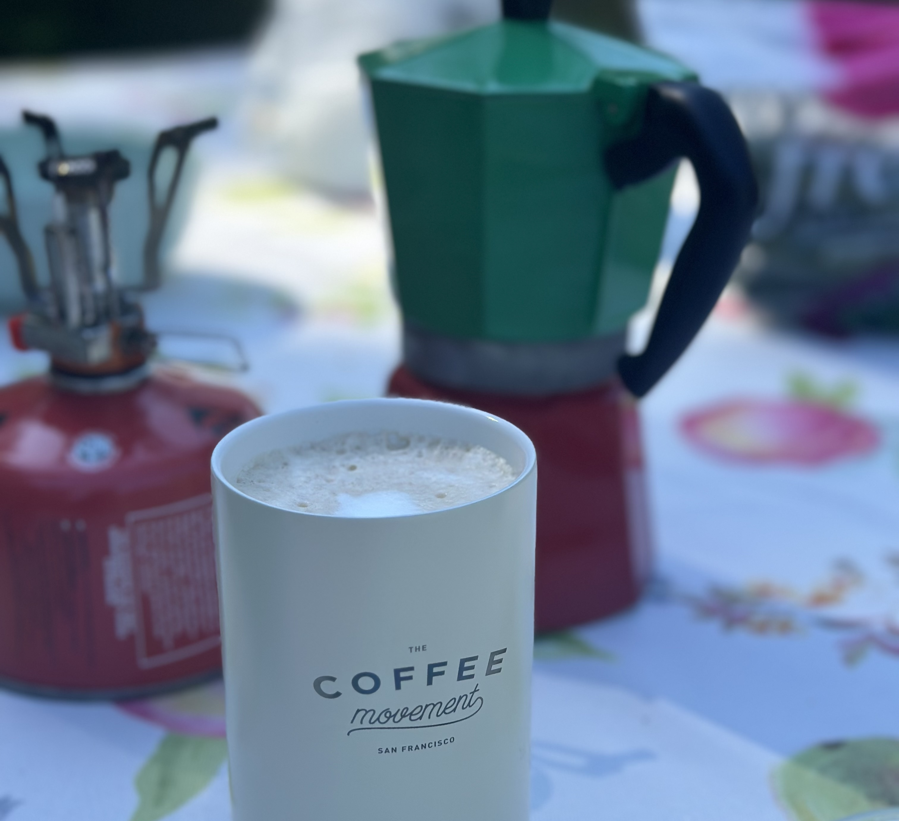

Revelstoke Road Trip
July 7, 2025

Viewpoint from Meadows in the Sky on Mount Revelstoke.
This year's long weekend road trip took us to Revelstoke. We've passed through the small town many times in the past as part of our Rockies trips, but never actually had the chance to visit not one but two national parks in the area. Revelstoke actually has a lot of amenities and things to do since it is a very popular skiing destination in the winter.
tl;dr
Our stops:
Vancouver - Revelstoke
- North Arm Farm (Pemberton)
- Seton Lake Lookout (Lillooet)
- Dutchmen Dairy (Sicamous)
- Mount Revelstoke National Park (Revelstoke)
- Eva Lake (Revelstoke)
- Revelstoke Farmer's Market (Revelstoke)
- Dose Coffee (Revelstoke)
- Glacier National Park (Rogers Pass)
- Martha Creek Provincial Park (Revelstoke)
- Mt. Begbie Brewing (Revelstoke)
- Little Spoon (Revelstoke)
- Kentucky-Alleyne Provincial Park (Aspen Grove)
Day 1
Having made the drive through interior BC countless times in the past, we decided to take a scenic detour this time since the distance to Revelstoke is very manageable in one day. We grabbed coffee from C Market in Coquitlam as headed out as we often do because of their convenient location right by the highway, and started our journey along the Sea to Sky. There was a lot of morning traffic in Vancouver but it settled once we left the city. Since we've seen everything along the Sea to Sky highway, our first stop was not until Pemberton. We visited North Arm Farm for the first time, hoping to pick up some fruits for the drive. There weren't many options since their berries are actually for U-Pick, but we got some delicious cherries and appreciated the beautiful scenery. They have such a large space and I can understand a bit better why people choose it as their wedding venue. Nevertheless, it was a short stop because we were on a time crunch to get to Revelstoke in time to check-in.

The next stop was Seton Lake Lookout in Lillooet. This place has been on my list forever but I was surprised still by how far it is from Vancouver. Luckily, it was a very relaxing and scenic drive along a winding highway to get there. The lookout is located at a viewpoint down a very steep grade hill, so definitely need to be prepared to make that turn. The trail to the lookout is also completely unmarked, so you really need to know that it's there. It's only a short 10 minute walk from the highway to the lookout, but it does get steep and exposed at the very end. It's all worth it though because the view is absolutely amazing. Also, there's a very pretty tree that makes for a great photo at the top. We were there just long enough for a couple of photos and went onwards with our trip. We were definitely very selective of the stops we were making on this trip so from Lillooet, we drove straight to Sicamous.
Sicamous was definitely my limit for driving non-stop. Luckily, ice cream awaits us from Dutchmen Dairy! They have a great selection of ice cream flavours and it was super creamy and delicious. We also got some stroopwaffles, which goes so well with the ice cream, and a chocolate milk to enjoy on the road. Everything we got was so good and it was definitely worth the stop. There's also a large fruit stand right across the street.
We got to Revelstoke by 7:30PM, which worked out perfectly for us to check in with the ranger station at Mount Revelstoke National Park. We booked the MicrOcubes at the Snowforest Campground, which are these micro cabins that are super adorable. The campground is currently not allowing for soft-sided tent camping reservations because of potentially dangerous bears in the area, so the MicrOcubes are a nice alternative. We found out on this trip that tent camping is actually allowed on a day-by-day basis since the bears are not always around. In fact, we saw some tents at the campground every day that we were there, so it's actually a fantastic option if you want to camp last minute.
The MicrOcubes are very small but fully equipped with a sofa bed, chairs, tables, and most conveniently, electricity. There are also chairs outside by the fire pit and a picnic table. The campground is super luxurious because it's part of a national park and it was only established around 5 years ago. Everything there was beautiful and clean and the amenities were very well maintained. There is a gender neutral washroom, which I think is so considerate for all the families that camp there, who can take their children to one washroom together. The washroom was also very clean, of course, and super spacious with a great shower. And of course, the best part of staying in a national park campground is the free unlimited firewood :)


Mount Revelstoke National Park
Stops along our road trip.
The next stop was Seton Lake Lookout in Lillooet. This place has been on my list forever but I was surprised still by how far it is from Vancouver. Luckily, it was a very relaxing and scenic drive along a winding highway to get there. The lookout is located at a viewpoint down a very steep grade hill, so definitely need to be prepared to make that turn. The trail to the lookout is also completely unmarked, so you really need to know that it's there. It's only a short 10 minute walk from the highway to the lookout, but it does get steep and exposed at the very end. It's all worth it though because the view is absolutely amazing. Also, there's a very pretty tree that makes for a great photo at the top. We were there just long enough for a couple of photos and went onwards with our trip. We were definitely very selective of the stops we were making on this trip so from Lillooet, we drove straight to Sicamous.
Dutchmen Dairy.
Sicamous was definitely my limit for driving non-stop. Luckily, ice cream awaits us from Dutchmen Dairy! They have a great selection of ice cream flavours and it was super creamy and delicious. We also got some stroopwaffles, which goes so well with the ice cream, and a chocolate milk to enjoy on the road. Everything we got was so good and it was definitely worth the stop. There's also a large fruit stand right across the street.
We got to Revelstoke by 7:30PM, which worked out perfectly for us to check in with the ranger station at Mount Revelstoke National Park. We booked the MicrOcubes at the Snowforest Campground, which are these micro cabins that are super adorable. The campground is currently not allowing for soft-sided tent camping reservations because of potentially dangerous bears in the area, so the MicrOcubes are a nice alternative. We found out on this trip that tent camping is actually allowed on a day-by-day basis since the bears are not always around. In fact, we saw some tents at the campground every day that we were there, so it's actually a fantastic option if you want to camp last minute.
The MicrOcubes are very small but fully equipped with a sofa bed, chairs, tables, and most conveniently, electricity. There are also chairs outside by the fire pit and a picnic table. The campground is super luxurious because it's part of a national park and it was only established around 5 years ago. Everything there was beautiful and clean and the amenities were very well maintained. There is a gender neutral washroom, which I think is so considerate for all the families that camp there, who can take their children to one washroom together. The washroom was also very clean, of course, and super spacious with a great shower. And of course, the best part of staying in a national park campground is the free unlimited firewood :)
Snowforest Campground
Day 2
Day 2 was reserved for our major hike of the trip to Eva Lake. Since the hike isn't actually too long, we decided to take our time in the morning and enjoy our breakfast at the campground. We enjoyed our classic campground latte, which we make with our Moka pot and our Bellman stovetop milk steamer. It's a very excessive process for a morning coffee, but we still enjoy it.
After breakfast, we headed up the mountain to the trailhead. The drive up was beautiful but much longer than I expected. It takes around 40 minutes to drive up the Meadows in the Sky Parkway, but the top is very rewarding. We saw almost no cars along the way so we thought there weren't many visitors, but at the top we discovered that everyone was simply already there. The parking lot was full, but the cars all just parked along the road. I remember a time when that's how it was at Moraine Lake and now cars can't even drive in anymore, so I guess we're still in the early wave of Revelstoke visitors.

The trail was actually not difficult, despite the black diamond rating by the park. I assume that's only to deter unprepared tourists from trying to hike without any supplies. We passed by many other people on the trail, making it feel much more safe to me. Soon enough, we made it to Miller Lake, which is just before Eva Lake. I actually think Miller Lake is the better lake but Eva Lake is where they've set up picnic shelters and backcountry camping sites. Both lake are still beautiful, of course. We ate some snacks and our lunch and just enjoyed the view for a while. The weather was very nice that day because it was sunny but not too hot.

Glacier National Park

Morning coffee.
After breakfast, we headed up the mountain to the trailhead. The drive up was beautiful but much longer than I expected. It takes around 40 minutes to drive up the Meadows in the Sky Parkway, but the top is very rewarding. We saw almost no cars along the way so we thought there weren't many visitors, but at the top we discovered that everyone was simply already there. The parking lot was full, but the cars all just parked along the road. I remember a time when that's how it was at Moraine Lake and now cars can't even drive in anymore, so I guess we're still in the early wave of Revelstoke visitors.
Eva Lake trail.
The trail was actually not difficult, despite the black diamond rating by the park. I assume that's only to deter unprepared tourists from trying to hike without any supplies. We passed by many other people on the trail, making it feel much more safe to me. Soon enough, we made it to Miller Lake, which is just before Eva Lake. I actually think Miller Lake is the better lake but Eva Lake is where they've set up picnic shelters and backcountry camping sites. Both lake are still beautiful, of course. We ate some snacks and our lunch and just enjoyed the view for a while. The weather was very nice that day because it was sunny but not too hot.
Eva Lake and Miller Lake
On our way back, we stopped by the classic landmark of the park, the old fire lookout. Unfortunately, it wasn't open to visitors, but it's still a very cool building. We made a few stops at the viewpoints along the way back down and headed back to the campground. The shower facilities were a very nice treat after the hike, and we spent the rest of the evening cooking dinner and tending to our camp fire.
Day 3
Since we already went on a long hike, we decided not to do another one and instead take the time to explore the town. Saturdays are the farmer's market day in Revelstoke, we headed straight there in the morning. We picked up a nice coffee from Dose Coffee and walked around the market. There were surprisingly many vendors and a lot of locals with their straw baskets shopping for fresh produce. There was also a stall selling haskup berries, which I've never seen before. Perhaps they're the next cool fruit?

After the market, we headed to Glacier National Park to the Great Glacier hike. There really isn't a lot to do in Glacier National Park, which is a bit disappointing. But it makes a lot of sense since the glacier is quickly disappearing. At the trail head, there were many information panels that described the massive hotel that used to be there until 1925. Apparently it rivaled Fairmont Lake Louise in size and luxury, but once the glacier started to recede, they no longer had enough visitors to keep the place running. Now it's just a few stumps of concrete that remain in a grassy field. The hike to the glacier viewpoint was short but steep, with rewarding views along the Illecillewaet River.


Revelstoke - Vancouver
Coffee at the farmer's market.
After the market, we headed to Glacier National Park to the Great Glacier hike. There really isn't a lot to do in Glacier National Park, which is a bit disappointing. But it makes a lot of sense since the glacier is quickly disappearing. At the trail head, there were many information panels that described the massive hotel that used to be there until 1925. Apparently it rivaled Fairmont Lake Louise in size and luxury, but once the glacier started to recede, they no longer had enough visitors to keep the place running. Now it's just a few stumps of concrete that remain in a grassy field. The hike to the glacier viewpoint was short but steep, with rewarding views along the Illecillewaet River.
Glacier National Park.
We tried to stop at Rogers Pass to learn more about the history of the area, but unfortunately it was closed for renovations. They did have an amazingly large and brand new washroom though. It was comical how large it was, but it made more sense when we watched tour buses pull up to the parking lot for their break. We headed back towards Revelstoke after that to visit Martha Creek Provincial Park. The park was recommended to us by the park ranger and it was quite a nice place to sit and relax by the water. There were many paddleboarders and boaters out there, but we didn't bring anything with us on this trip so we just stayed and enjoyed the view.
Dinner and a walk.
For dinner, we headed to Mt. Begbie Brewing for some pretzels and beer. Everything we ordered was actually beyond our expectations so it was definitely a great stop. I think their menu is better than most of the restaurants in town too. We stopped at one more recommended spot after, which turned out to be a flop. The ranger suggested that we take a walk along the Revelstoke airport landing strip. It was definitely a beautiful view but there were a million mosquitoes there and we were definitely not prepared. We ended up running back to the car after only a few minutes. It was probably a good thing too, because almost immediated after, there was a massive rainstorm. The rain was super heavy but it came and went very fast. We grabbed some extra food from A&W and headed back to the campground for the night.
Day 4
Even though it was another long drive back to Vancouver, we took it slow in the morning and had a proper breakfast at Little Spoon before beginning our journey. Little Spoon was actually such an adorable place. It's a new cafe that opened up in the new developments near the ski hill and they had such great food. It was a perfect start to our day and a perfect last stop in Revelstoke.
Breakfast and Kentucky-Alleyne Lake.
We took another scenic detour on our way back, through Mara Lake, Vernon, Kelowna, and finally stopping at Kentucky-Alleyne Provincial Park in Aspen Grove. This park has also been on my list for a long time because it is such a beautiful shade of blue. We never stopped before because I had heard that the road to the lake wasn't paved, but it seems like that was not the case anymore. It's still a very long drive from the highway but I think it was worth it. The lake was stunning and there were actually a lot of people swimming and enjoying the water. There's also a campground there so perhaps someday we will visit again. It was our only stop on the way back, but it was a great one.